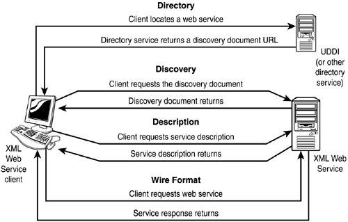

Note
You will find the Web Service solution in a separate location called SecurityWebServices on the Web site. The Chapter 13 solution will contain the sample forms that are created to call methods from the Web Service. |
The infrastructure of Web Services has four main areas:
XML Web Services Directories. Central location to locate XML Web Services that outside organizations create. The UDDI registry is an example of one of these directories. Your Web Service client might not even need to use these if you know the address of the Web Service you are accessing.
XML Web Service Discovery. Discovering documents that describe a particular XML Web Service using the Web Services Description Language (WSDL). The DISCO specification defines an algorithm for locating service descriptions. Again, if you know the location of the service description, you can avoid this process.
XML Web Service Description. Defines what types of methods the XML Web Service uses. Tells clients how to interact with an XML Web Service so that they know how to use it.
XML Web Service Wire Formats. To be able to communicate with all platforms and languages, XML Web Services use open wire formats. These are protocols that any system that is capable of supporting the most common Web standards can understand. SOAP is the main protocol used.

You can find all of the examples in this chapter in the Solution called Visual Basic .NET-Chapter 13 on the Web site.
Note
You will find the Web Service solution in a separate location called SecurityWebServices on the Web site. The Chapter 13 solution will contain the sample forms that are created to call methods from the Web Service. |